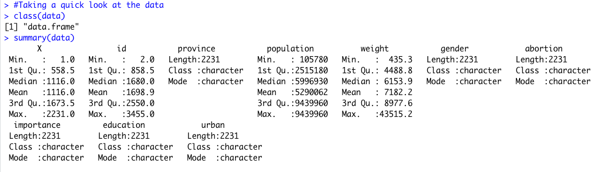

This week's assignment was all about exploring different types of data visualizations in R. I decided to use the 2011 Canadian Election survey data regarding abortion sentiment. A short snippet of the dataset can be seen below:
The columns I decided to focus on were province, gender, abortion sentiment, education, and urban. The province column
indicates which Canadian province the voter lived in. The abortion column indicates whether the voter thinks that abortions should be banned in Canada.
"No" signifies that the voter does NOT want abortion to be banned, and "Yes" signifies that the voter DOES want abortion to be banned.
The education column indicates the highest level of education achieved by the voter, and the urban column indicates whether the voter lived in an "urban" or
"rural" region of their respective province.
After loading the data into R as a CSV file, I used the class() and summary() functions to take a quick look at the dataset.

The data object is registered as a data frame, so that is good, however many of the columns I wanted to analyze were in character format. To fix This
I used the unique() and factor() functions to turn the character columns into ordered factors. An example with the education column is below:
With the desired columns formatted as ordered factors, I was able to start exploring the dataset with visualizations.
I started with base R graphics, comparing gender to abortion and then education to abortion with the plot() function.
It looks like gender doesn't play a huge role, the vast majority of people regardless of gender feel that abortion should not be banned.
The education plot reveals an interesting trend, as the highest educated population, those with a graduate degree ("higher"), has the lowest percentage of people that think abortion should be banned.
Similarly, the least educated population, those that didn't finish high school, has the highest population of people that think abortions should be banned.
With some initial data exploration with base R graphics, I then turned to the ggplot2 package for visualizations. I first plotted provinces vs abortion sentiment, colored by abortion sentiment with geom_col().
It looks like Ontario and Quebec have the highest populations in favor of abortion being banned, highlighted in yellow. This being said, these two provinces
are also very highly populated, and the overall proportion of pro-abortion vs anti-abortion weighs strongly in favor of pro-abortion.
I was also interested to know if urban vs rural populations would vote differently regarding abortion.
It appears that the urban populations have more people overall in favor of getting rid of abortions, however this is a relatively small portion of the urban population overall.
The rural population, on the other hand, is split roughly 40-60 on the abortion debate, with the majority voting "No" to banning abortion. It makes sense that the rural population has
a higher proportion of anti-abortion sentiment, given that rural areas tend to vote more conservatively than urban areas.
Now that base R and ggplot2 have been explored to an extent, I moved on to producing a multivariate plot to enable the comparison of 3 or more variables
simultaneously. Before using the cdparcoord package to produce an interactive visualization, I first re-ordered the dataset columns and removed all but the province, education, gender, and abortion columns.
Once the data1 object was prepared for visualization, I went ahead and used the discretize() and discparcoord() functions to produce the visualization seen below.
The visualization loads with all of the possible values selected, but playing around with de-selecting certain parameters lets you see the impact on the end lines pointing to either "yes" or "no" regarding banning abortion. A deep blue line pointing to "No" indicates that over 80 voters
fitting the selected parameters felt that abortion should NOT be banned. A deep blue line pointing to "Yes" means the opposite. Red lines generally indicate that very few voters made a particular decision, while lines colored somewhere inbetween red and blue indicate that somewhere between
30 and 50 voters made that particular decision.
Manipulating the province and education values within the visualization also provide insight into which provinces have higher proportions of well-educated voters. Quebec and Ontario both stand out as having more graduate level voters than the other provinces.
Overall, I think the most useful visualization was the bar-chart showing voter abortion sentiment by province, colored by abortion sentiment. A quick look at this
visualization makes it easy to see that Canadian voters as a whole voted predominantly to keep abortion, particularly in highly populated provinces. It is also easy to see that the lower populated provinces, which are likely to be more rural and therefore conservative, were more evenly divided on the issue.
If the highly populated Ontario, Quebec, and British Columbia provinces were removed from the vote, it would be a tough call on which side of the abortion argument would win.
This was an interesting assignment, and I enjoyed exploring the chosen data with different visualization approaches.
As always, all of the files can be found on my Github page.